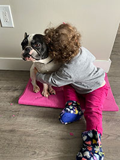

First of all, I'd like to say that I don't hate cats. However my preference has always been for dogs. Dogs are considered a human's best friend. They are companions, they are protector and always they are by your side. They feel if you are happy or sad. Dogs are easy to train and they are polite. They can respond to all your commands, help people with illnesses and people who need accessibility. And that's one of the reasons I think dogs are better than cats.
I have a dog, his name is Romeu and he is my emotional support. He is very docile, loves affection and always keeps me company. He's definitely my best friend and as you can see, my daughter's best friend too.
I prefer cats because they are sweet and independent. Cats don't give you much problem or work. They don't depend on people near them all the time. And they don't need to walk outside because they use their sandbox. This point is fantastic because no one deserves to leave home during the wintertime. Cats are amazing.

My cat sleeps 8 hours a day. When he is not sleeping, he is eating. He is an old cat and does not want to play for more than 5 minutes. He is an intelligent cat because he can open doors and windows. There are no arguments to discuss how cats are better than dogs....they are.